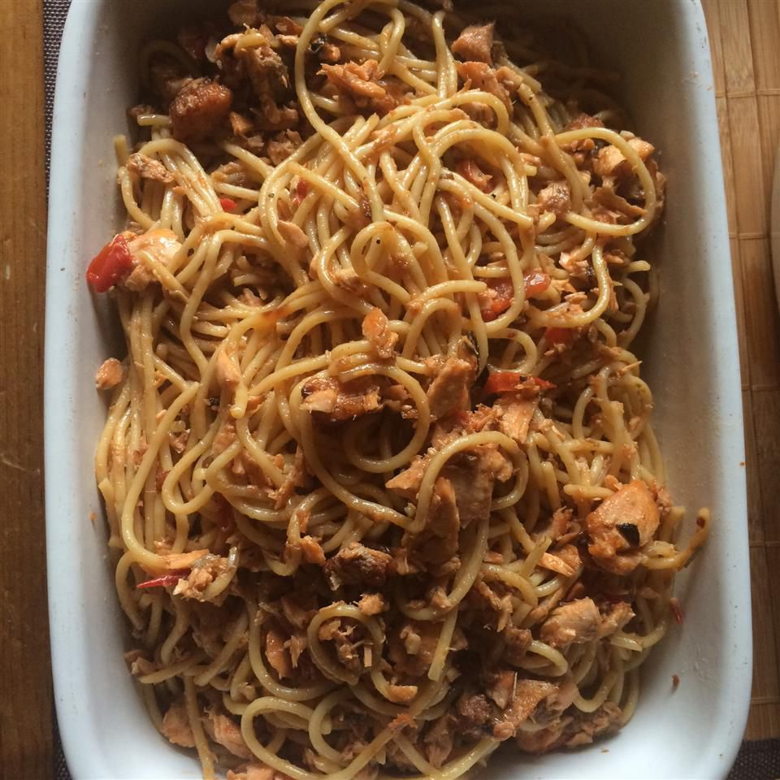

Salmon Pasta Pomodoro

Description
Pasta pomodoro is an Italian food typically prepared with
pasta, olive oil, fresh tomatoes, basil, and various other fresh ingredients.
It is intended to be a quick and light dish, rather than a dish in a heavy sauce.
An easy, light yet filling, pasta pomodoro dish with salmon.
Goes great with steamed mixed veggies.
Ingredients
- 1 (8 ounce) package spaghetti
- ¼ cup extra-virgin olive oil
- 1 onion, chopped
- 1 tablespoon minced garlic
- 4 (4 ounce) salmon fillets
- 3 tomatoes, chopped
- salt and pepper to taste
- 1 tablespoon chopped fresh basil
- ½ cup grated Parmesan cheese
Steps
- Fill a large pot with lightly salted water and bring to a rolling boil over high heat.
Once the water is boiling, stir in the spaghetti, and return to a boil.
Cook the pasta uncovered, stirring occasionally, until the pasta has cooked through,
but is still firm to the bite, about 12 minutes.
Reserve 1 cup of the pasta water.
Drain well in a colander set in the sink.
- Heat olive oil in a large skillet over medium-high heat.
Place onion and garlic in the skillet in an even layer then lay salmon fillets on top.
Place a lid on the skillet and cook the salmon until it flakes easily and the onions are tender.
Flake all of the salmon. Season with salt and pepper, then reduce the heat to medium.
Toss the spaghetti, tomatoes, and basil with the salmon and sprinkle with Parmesan cheese.
Stir in some of the pasta water if the pasta becomes dry.
Return to Odin Recipes